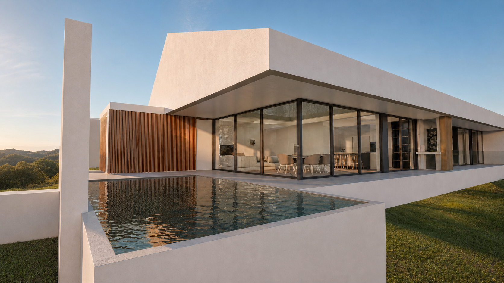
Arquitetura
com identidade.
Explorarprojetos↘
(01)
O atelier
JDA Arquitectura
Arquitetura com identidade.
Projetos que atravessam gerações.
Na JDA Arquitectura, acreditamos que a arquitetura é muito mais do que construir edifícios. É criar espaços que melhoram a vida das pessoas, valorizam o território e permanecem relevantes ao longo do tempo. Com mais de 20 anos de experiência, desenvolvemos projetos que conciliam criatividade, rigor técnico e funcionalidade, sempre com uma abordagem personalizada. Cada cliente, cada terreno e cada desafio são únicos — e é dessa singularidade que nasce a nossa arquitetura. Ao longo do nosso percurso projetámos mais de 100 obras, totalizando cerca de 42.000 m² de arquitetura, em Portugal e no estrangeiro, com intervenções em França, Dubai e Quénia. Não seguimos soluções pré-definidas. Escutamos, analisamos e desenhamos cada projeto de raiz, procurando o equilíbrio entre estética, funcionalidade, sustentabilidade e viabilidade económica. Acompanhamos todas as fases, do primeiro esboço à conclusão da obra.
Uma resposta completa, do desenho à obra.
- Arquitetura residencial
- Habitação unifamiliar e multifamiliar
- Arquitetura comercial e industrial
- Reabilitação e renovação
- Legalizações e licenciamento
- Planeamento urbano e loteamentos
- Direção e acompanhamento de obra
Cada projeto é uma resposta exclusiva às necessidades do cliente.
Não desenhamos apenas edifícios; desenhamos espaços que refletem histórias, modos de viver e ambições. Procuramos uma arquitetura intemporal, funcional e sustentável, onde cada detalhe acrescenta valor e qualidade.
Acreditamos que o sucesso de um projeto nasce da relação de confiança entre arquiteto e cliente. É essa proximidade que nos permite transformar ideias em espaços únicos, concebidos para durar e para ser vividos.
(02)
Projetos selecionados
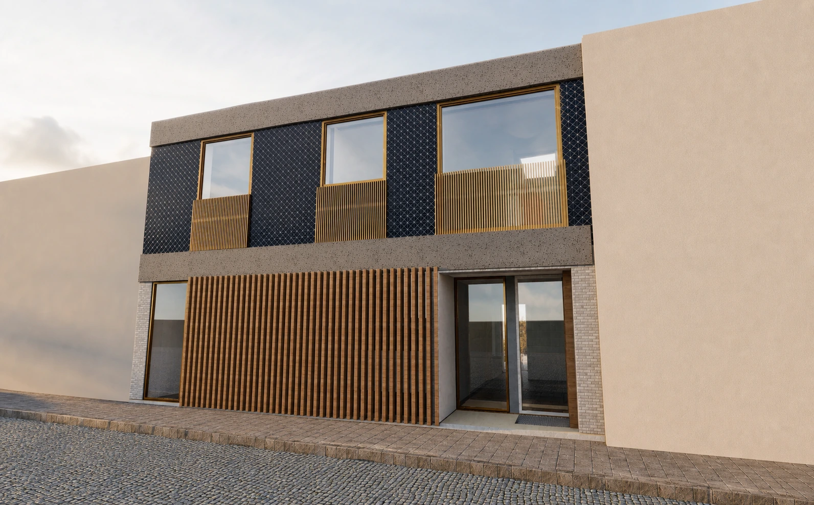
01 / 04Reabilitação · Foz do Douro, Porto
Habitação 1+1
2026 — Licenciamento
Uma intervenção que reorganiza e amplia um edifício habitacional, reforçando a luz natural, o conforto e a continuidade entre os espaços interiores e exteriores.
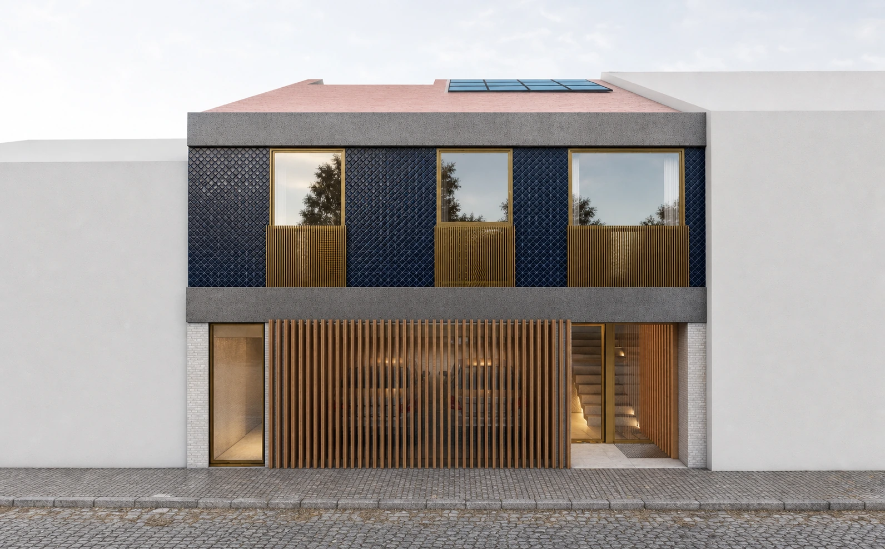
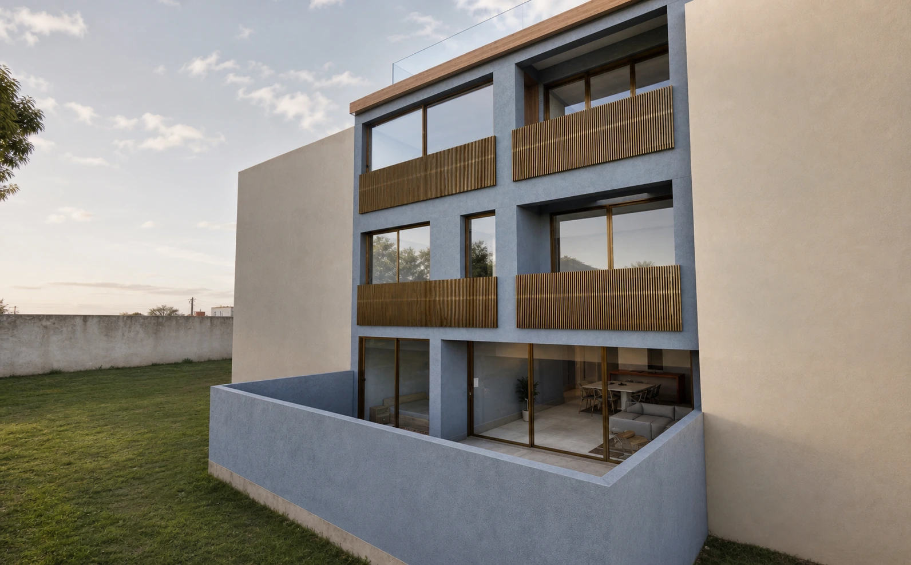
Habitação 1+1 · Foz do Douro
Duas formas de habitar, uma intervenção integrada.
Inserido num tecido urbano consolidado da Foz do Douro, o projeto altera e amplia um edifício existente, conciliando a identidade do lugar com as atuais exigências de conforto, eficiência e qualidade arquitetónica.
A proposta reorganiza duas frações independentes. A habitação T1 desenvolve-se numa relação próxima com os pátios; a habitação T3 distribui as áreas sociais, privadas e técnicas por diferentes níveis, culminando num terraço acessível.
A entrada de luz natural, a ventilação e a continuidade entre interior e exterior estruturam toda a intervenção. A nova expressão das fachadas preserva a escala da rua e introduz uma linguagem contemporânea, marcada pelo ritmo dos elementos verticais e pela profundidade dos vãos.
02 / 04
Habitação · Nine
Casa HF
2025 — Em construção
Uma casa de campo contemporânea, desenhada em torno da luz, da tranquilidade e de uma relação contínua com a natureza.
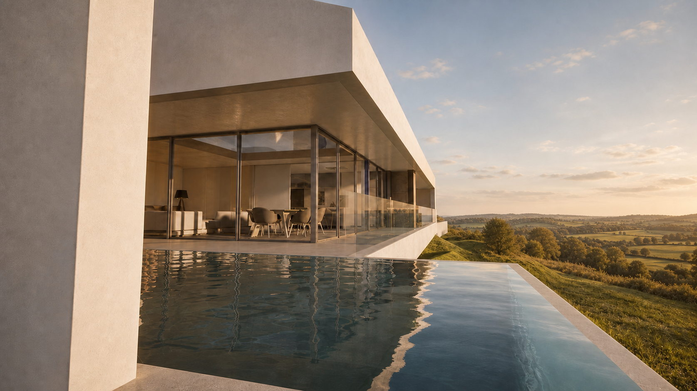
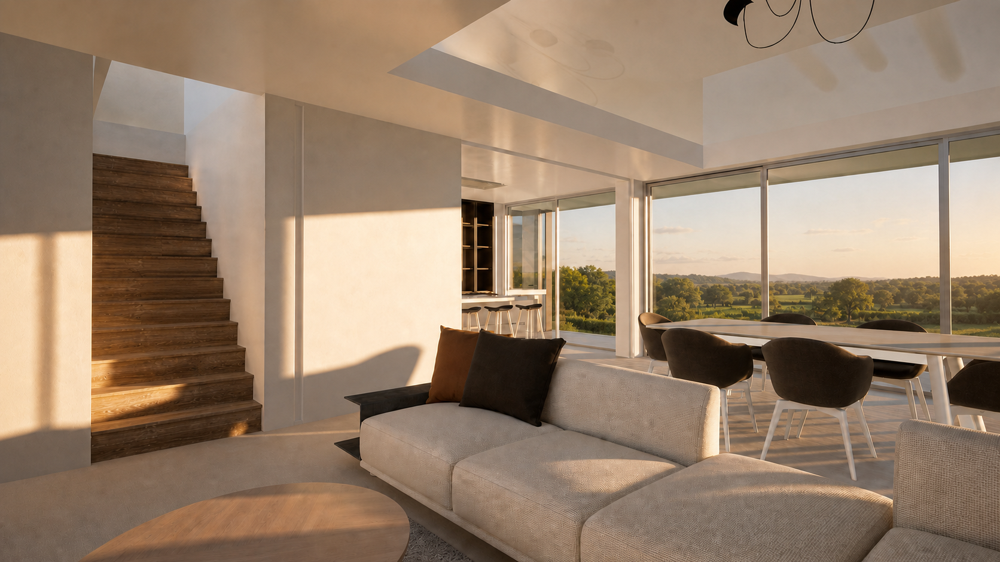
Casa HF · Nine
Uma casa desenhada para viver a paisagem.
Implantada num lote de 1.900 m² em Nine, Vila Nova de Famalicão, a Casa HF foi concebida para responder ao quotidiano de uma família, privilegiando a tranquilidade, o conforto e uma relação próxima com a natureza.
Com 320 m² de construção, a organização da casa nasce em torno dos espaços sociais. A sala em pé-direito duplo assume o papel central, reunindo luz natural, amplitude e continuidade visual entre o interior, o jardim e a piscina.
Os volumes puros, as linhas contemporâneas e a utilização de materiais naturais procuram um equilíbrio entre expressão arquitetónica e integração paisagística. As grandes superfícies envidraçadas prolongam os espaços interiores e permitem viver o exterior ao longo das diferentes estações do ano.
A privacidade das áreas íntimas convive com a fluidez dos espaços comuns, criando um ambiente funcional, luminoso e intemporal. Mais do que uma habitação, a Casa HF propõe uma forma de viver onde arquitetura, natureza e bem-estar acompanham o crescimento da família.
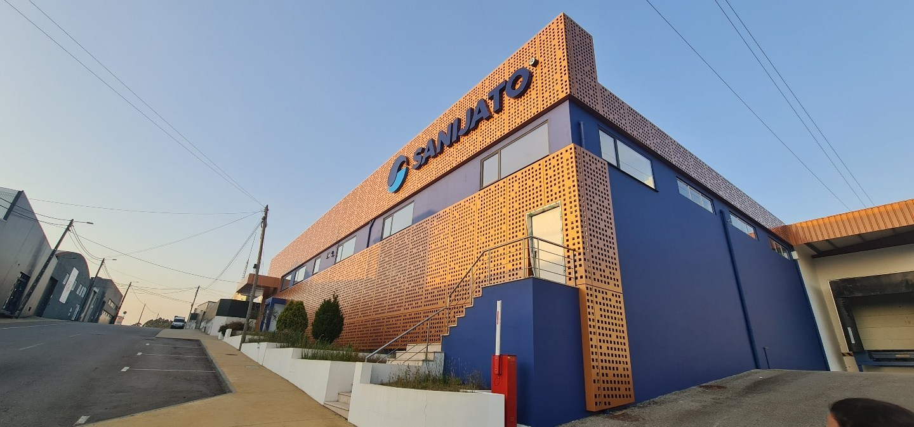
03 / 04Industrial · Esmoriz
Nova Sede da Sanijato
2025 — Obra concluída
Uma arquitetura que traduz tradição, inovação, qualidade e confiança.
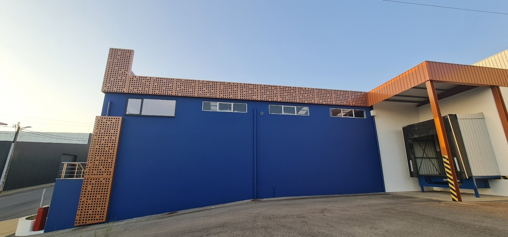
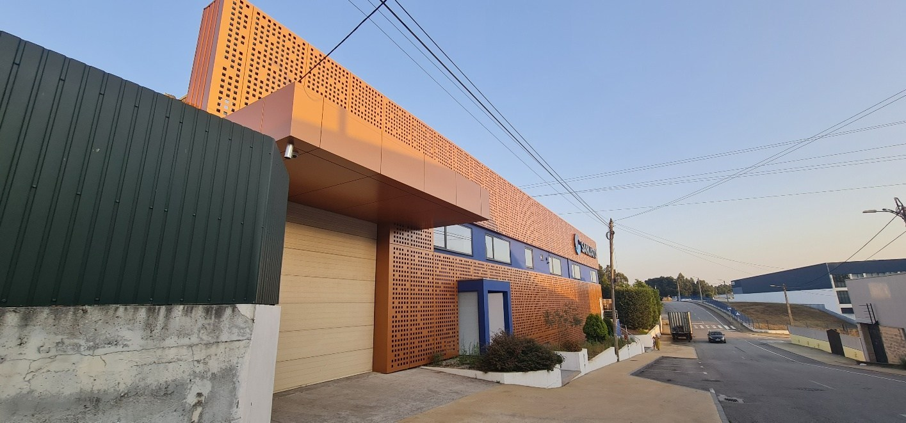
Sanijato · Nova sede
Um novo capítulo para uma marca portuguesa.
Há projetos que marcam um percurso profissional e permanecem na memória. A nova sede da Sanijato é, para nós, um desses projetos.
Projetar as novas instalações de uma empresa com um percurso tão sólido e reconhecido no mercado português representou um enorme privilégio. Presente em várias gerações de famílias portuguesas, a Sanijato soube evoluir sem perder a identidade que a tornou uma referência no seu setor.
O conceito arquitetónico traduz tradição, inovação, qualidade e confiança. O edifício responde às exigências atuais de uma empresa em crescimento, com espaços de trabalho funcionais, eficientes e luminosos. A arquitetura reforça a identidade da marca e prepara o ambiente para os desafios do futuro.
Mais do que desenvolver um edifício, este projeto nasceu de uma relação de proximidade entre cliente e equipa. A confiança, a partilha de objetivos e uma visão comum permitiram criar uma solução que representa a história da empresa e a sua ambição de continuar a crescer e inovar.
A nova sede da Sanijato une passado e futuro: um espaço contemporâneo que respeita a herança de uma marca portuguesa reconhecida e reforça a sua presença para as próximas gerações. É com enorme orgulho que fazemos parte deste capítulo da sua história.
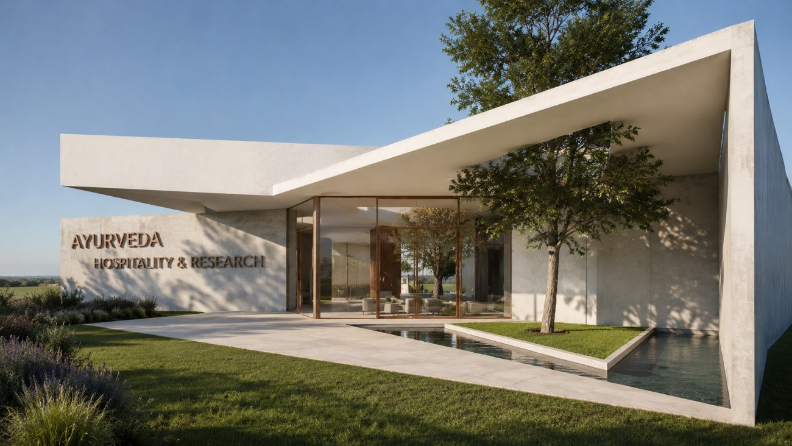
04 / 04Saúde · Mourão, Portugal
Centro Hospitalar Ayurveda
2024 — Licenciamento
Um centro pensado para integrar saúde, investigação e bem-estar numa arquitetura em contacto permanente com a natureza.
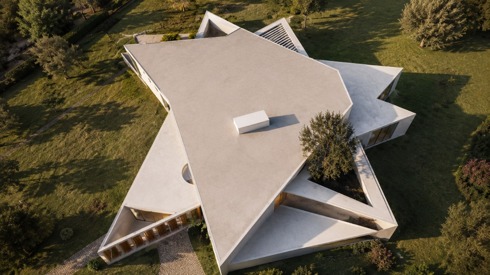
Centro Hospitalar Ayurveda · Mourão
Arquitetura para o equilíbrio e a cura.
O Centro Hospitalar Ayurveda nasce da procura de uma arquitetura capaz de apoiar o equilíbrio físico e emocional. O projeto reúne espaços clínicos, terapêuticos, residenciais, de investigação e de apoio num conjunto coerente e acolhedor.
A organização inspira-se na geometria estrelada do Castelo de Mourão. As diferentes alas desenvolvem-se a partir de um núcleo comum, criando percursos claros, proximidade funcional e uma identidade fortemente ligada ao território.
Jardins terapêuticos, pátios, água e luz natural tornam a paisagem parte ativa da experiência. A materialidade serena e os espaços de transição procuram reduzir a escala institucional e promover conforto, silêncio e bem-estar.
Mais do que um equipamento de saúde, o projeto propõe um lugar de cuidado e investigação onde arquitetura, natureza e princípios ayurvédicos se encontram.
(03)
Obras e projetos
Uma década
de projetos.
Projetos desenvolvidos pelo atelier desde a sua fundação, em 2015: arquitetura, reabilitação, interiores e acompanhamento de obra.
8 projetos+
Alteração, Ampliação e Legalização de Habitação Unifamiliar
Esposende · Licenciamento
Casa Mariana
Esposende · Legalização
Loteamento Habitacional
Fão, Esposende · Licenciamento
4 projetos+
Loteamento Estrada Real
Marinhas, Esposende · Planeamento urbano
Reconversão de Centro Comercial em Alojamento Local
Vila Nova de Gaia · Reabilitação e licenciamento
Habitação Abelheira
Esposende · Licenciamento
9 projetos+
Estudo de Fachada ACICE
Esposende · Estudo arquitetónico
Desenho de Mobiliário
Projeto de interiores
Renovação de Casa de Família
Douro · Projeto de interiores
Renovação de Habitação
Belinho, Esposende · Licenciamento e projeto de interiores
Casa V&N
Fão, Esposende · Projeto de interiores
Casa 25 de Abril
Fão, Esposende · Projeto de interiores
Centro Hospitalar Ayurveda
Mourão, Portugal · Licenciamento
Alojamento Local Apúlia
Esposende · Legalização
Complexo Habitacional T3 e T4
Évora, Portugal · Projeto habitacional
6 projetos+
Os Maias
Vila do Conde · Reabilitação e ampliação de edifício habitacional
Luxury
Stand automóvel · Projeto de arquitetura e interiores
Casa F&H
Nine, Vila Nova de Famalicão · Licenciamento, execução e acompanhamento da obra
Alojamento Local
Coimbra · Licenciamento e acompanhamento
Pavilhão Industrial
Trofa · Licenciamento
Casa Maria Luísa
Estudo arquitetónico
3 projetos+
Casa Espelho
Estúdio de apoio · Contentor marítimo reutilizado · Obra concluída
Casa do Campo
Gemeses, Esposende · Licenciamento
Casa Malgueiro
Gemeses, Esposende · Licenciamento
5 projetos+
Casa Inês
Belinho, Esposende · Habitação unifamiliar
Projeto de Interiores — Quarto
Fão, Esposende · Execução e coordenação
Casa Quinta da Barca
Esposende · Renovação, acompanhamento e coordenação
Prédio ARU
Fão, Esposende · Estudo
Renovação de Escritórios Acero Monta
Vila Chã · Licenciamento e acompanhamento
3 projetos+
Casa de Pedra
Ofir, Esposende · Renovação, licenciamento e gestão da obra
Loteamento de Cinco Habitações
Fão · Estudo urbanístico
Estudo de Loteamento
Esposende · Planeamento urbano
8 projetos+
Edifício Multifamiliar
Vila Nova de Gaia · Licenciamento · Sete pisos
Hostel Sense of Ofir
Fão, Esposende · Licenciamento, acompanhamento e gestão da obra · Obra concluída
Turismo Rural
Torre de Moncorvo · Proposta de licenciamento
Casa Azevedo
Goios, Esposende · Licenciamento e acompanhamento da obra
Edifício de Escritórios
Courtry, França · Licenciamento
Complexo Habitacional
Évora · Projeto de execução e legalização
Loja Mordoma Joias
Viana do Castelo · Remodelação e acompanhamento da obra
Edifício Habitacional para Alojamento Local
Esposende · Renovação · Obra concluída
5 projetos+
Empreendimento Habitacional
Paris, França · Projeto habitacional
Casa Betão
Fão, Esposende · Habitação unifamiliar
Casa Bernardina
Curvos, Esposende · Habitação unifamiliar T3 · Obra concluída
Hostel Alto
Fão, Esposende · Licenciamento
iFood
Wenzhou, China · Projeto de arquitetura
4 projetos+
Casa Mira Gaia
Vila Nova de Gaia · Reabilitação de habitação unifamiliar
Casa L&T
Alvelos, Barcelos · Habitação unifamiliar T3 · Obra concluída
Casa Montbonnot-Saint-Martin
Grenoble, França · Habitação unifamiliar
Casa de Brasão
São Martinho da Castanheira, Carrazeda de Ansiães · Reabilitação de habitação histórica · Obra concluída
4 projetos+
Casa Verde
Gandra, Esposende · Habitação unifamiliar
Projeto Barthazar Rooftop
Rouen, Normandia, França · Reabilitação e projeto de interiores
Casa Rocha
Vila Nova de Famalicão · Habitação unifamiliar T3
Bloco de Apoio aos Bombeiros Voluntários de Esposende
Esposende · Estudo conceptual
(04)
O nosso processo
Um percurso transparente e colaborativo, pensado para transformar ambição em arquitetura com identidade.
- 01
Escutar
Conhecemos o cliente, compreendemos as necessidades e definimos os objetivos.
- 02
Interpretar
Analisamos o lugar, o programa, os condicionamentos e as oportunidades.
- 03
Criar
Transformamos ideias numa proposta coerente, funcional e com identidade.
- 04
Desenvolver
Aprofundamos cada solução e articulamos as diferentes especialidades.
- 05
Acompanhar
Apoiamos a construção para preservar a qualidade e a intenção do projeto.
(05)
Princípios
Pessoas
Desenhamos a partir da experiência de quem vai habitar cada espaço.
Lugar
Procuramos equilíbrio entre arquitetura, envolvente e paisagem.
Identidade
Cada projeto possui uma expressão própria e singular.
Rigor
Decisões conscientes para assegurar qualidade e respeitar o investimento.
(06)
Redes sociais
Do desenho
à obra.
Partilhamos projetos, ideias e inspirações, fortalecendo a ligação com clientes e parceiros através da arquitetura e da inovação.
Acreditamos numa arquitetura pensada para as pessoas e feita para as pessoas, onde cada projeto é uma oportunidade de criar espaços com identidade, qualidade e valor duradouro.
Tem um projeto em mente?